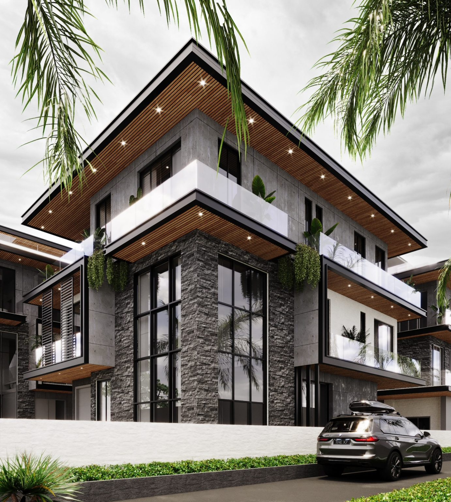

Showcasing my data analysis work and real-world applications
Analysis done to strategically analyze patient admission data to improve clinical outcomes and reduce healthcare costs. The initiative supports data-driven decision making to enhance operational efficiency and strengthen overall hospital performance.
Objective: Reduce patient wait times and improve ED efficiency
Data Size: 200+ patient records
Tools Used: Excel
Timeline: 2 years
Analyzed high-value property data from Banana Island, one of Lagos’ most exclusive residential areas, to uncover pricing patterns and key factors influencing property valuation. The analysis focused on property features, location advantages, and pricing distribution to support data-driven investment decisions in the luxury real estate market.
Objective: Understand factors influencing property prices
Dataset: Luxury residential property listings
Tools Used: Python (Numpy, Pandas, Matplotlib)
Status: Completed
Negative
Maintenance Cost-Occupancy Correlation
High
Luxury Premium Impact
Clear
Market Segmentation

I'm continuously working on new data analysis projects. Check back soon for additional case studies and completed analyses.
Areas of focus: Data Analysis, Business Intelligence, Statistical Analysis, Data Visualization
Understand data structure and identify patterns
Prepare and validate data quality
Uncover insights through statistical methods
Communicate findings and recommendations
Let's discuss how data insights can drive your organization's success
Start a Project